地政学
蘇州は上海の西、長江デルタの中核にあり、大運河、太湖、南京、杭州、無錫、上海港を結ぶ。国家級開発区と古都の遺産が同居し、中国の内需、輸出、文化観光を支える戦略的な水郷都市である。江南の玄関口でもある。

🇨🇳 中国 / 江蘇省 / World City Atlas
運河、古典園林、絹工芸、蘇州工業園区、金鶏湖、水郷観光、移住労働、住宅と交通、水害への備えが重なる江南の大都市。
都市の骨格
蘇州は大運河と太湖の水系、古典園林、絹の記憶、工業園区、金鶏湖の新市街を重ね、江南文化と世界的な製造業を同じ都市圏に抱えている。
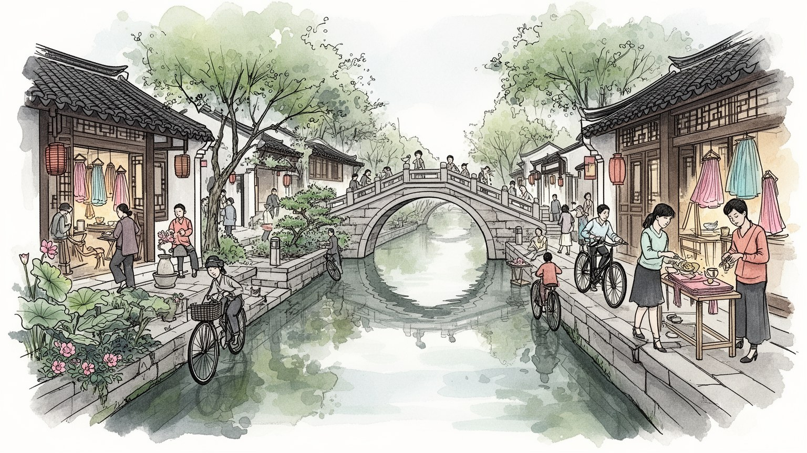
蘇州は上海の西、長江デルタの中核にあり、大運河、太湖、南京、杭州、無錫、上海港を結ぶ。国家級開発区と古都の遺産が同居し、中国の内需、輸出、文化観光を支える戦略的な水郷都市である。江南の玄関口でもある。
電子、精密機械、バイオ医薬、自動車部品、ソフトウェア、金融、観光、絹工芸が雇用を作る。外資企業と地元工場、研究職とライン作業、配達や清掃が近接し、移住者の暮らしも都市を動かす。夜勤も支える街である。
古典園林、崑曲、評弾、刺繍、絹、寺院、道観、祖先祭祀が江南の時間を保つ。観光地の静けさの裏で、学校、劇場、職人の工房、家族の祈りが続き、近代工業都市の速さを調整している。祭礼も静かに今も長く息づく。
旅行者は拙政園、留園、平江路、山塘街、同里、周荘を巡るが、住民には住宅価格、通勤、学校、医療、雨季の浸水、観光混雑が日常になる。美しい水辺は生活インフラでもある。朝市も路地に長く続く生活の街である。
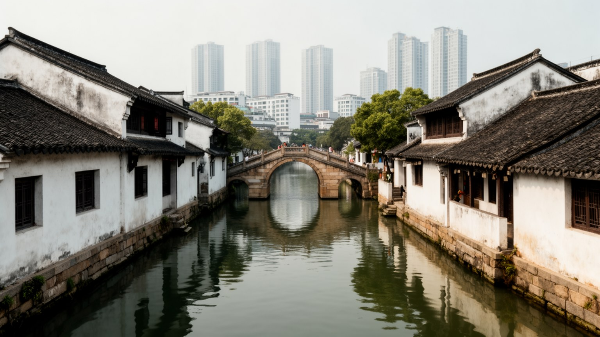
蘇州の地理は、水路を抜きに読めない。古城を囲む濠、縦横の運河、大運河、太湖、陽澄湖、長江デルタの低い平野が、都市の向きと生活の速度を決めてきた。水は米、絹、茶、建材、人の移動を支え、橋の多い街路と白壁の住宅景観を生んだ。上海に近い位置は、現代の蘇州を単なる歴史都市ではなく、港湾、空港、高速鉄道、製造業、観光を結ぶ広域都市に変えている。古城の水路は観光の背景である前に、排水、景観、微気候、歴史的な街区の境界を担う実用のインフラである。水辺の低さは、豪雨や台風期の浸水リスクも抱える。蘇州を歩くと、橋の上から小舟と高層ビルが同時に見える場所が多い。その重なりこそ、この都市の特徴である。太湖方面の水資源、周辺の工業団地、上海港へ向かう物流、古城の保存規制は、別々の話ではなく同じ水の地図に載っている。水郷の美しさは、都市が水を使い、恐れ、管理し続けてきた結果である。水路沿いの市場や学校、寺院への小道は、観光客の散策路であると同時に住民の生活動線でもある。橋の幅、護岸の高さ、船の音、雨の日の水位を読むと、都市の歴史が日常の身体感覚として残っていることが分かる。古い水路が残るほど、再開発の線引き、観光船の速度、生活排水の処理、夜間照明の明るさまで、細かな調整が都市の質を左右する。物流も静かに重なる。
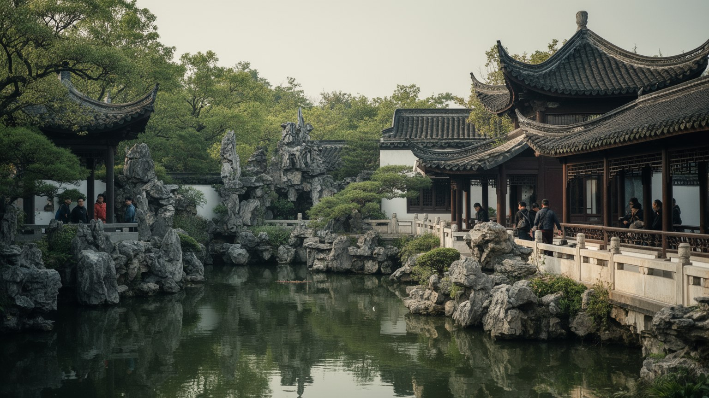
蘇州の古典園林は、都市の名声を世界へ運ぶ最も強い記号である。拙政園、留園、網師園、獅子林などの庭園は、池、築山、亭、回廊、窓、竹、石、書画を組み合わせ、限られた敷地の中に山水の宇宙を作る。これらは単なる美しい観光地ではなく、士大夫の学問、官僚生活、隠逸の理想、家族の儀礼、園芸技術、職人の石組みが重なる都市文化の結晶である。回廊を曲がるたびに視界が変わる設計は、蘇州の街そのものの水路や路地の感覚とも響き合う。観光客が増えるほど、入場管理、保存修理、周辺の商業化、住民の静けさは大きな課題になる。庭園の価値は、写真に収まる景色だけでなく、音、湿気、影、歩く順序、季節の花にある。近代化が進む都市の中で、園林は過去の遺物ではなく、ゆっくり見ることの技術を教える公共的な学校でもある。庭の小ささは閉鎖ではなく、世界を細部へ凝縮する方法であり、蘇州の文化的な強さをよく示している。さらに庭園は、古城の住宅地、博物館、茶館、学校、土産物店と隣り合い、保存と商業の距離を毎日調整している。石や水を静かに眺める時間は、速い産業都市の中で失われがちな余白を守る役割も持つ。庭園を守る仕事には、植物の手入れ、石の補修、池の水質、混雑時の導線、解説の言葉まで含まれ、文化遺産は多くの専門と現場労働で日々支えられている。
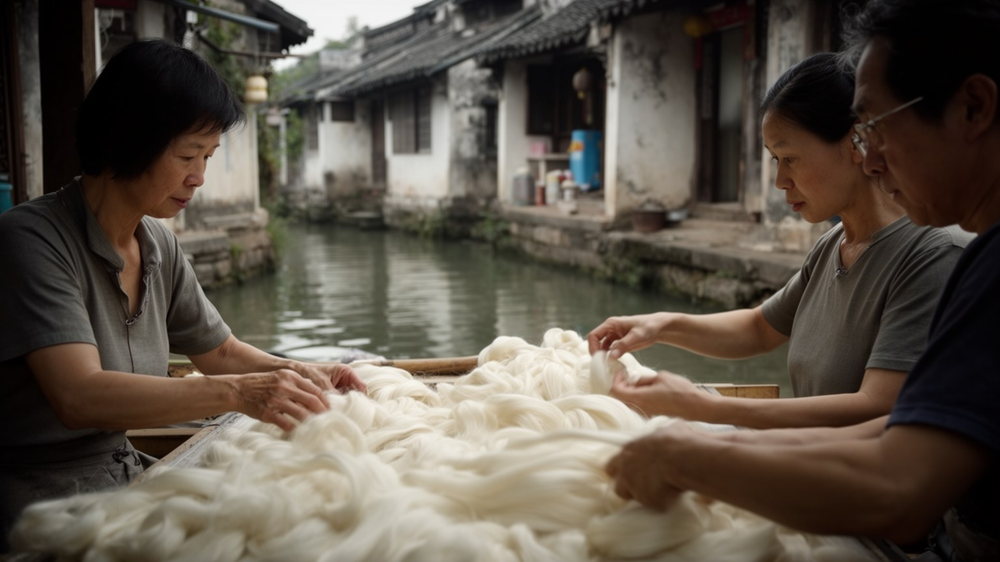
蘇州は絹の都市として長い記憶を持つ。江南の温暖で湿った気候、桑、養蚕、運河交通、商人、官僚層の需要が、絹織物と刺繍を育てた。蘇州刺繍は細い糸、柔らかな色、写実的な表現で知られ、花鳥、人物、山水、猫や魚の毛並みまで丁寧に表す。だが工芸は博物館の展示品だけではない。工房で目を凝らす職人、材料を扱う商店、観光客に技術を説明する案内人、学校で学ぶ若者、オンライン販売を試す作り手が、伝統を現在の仕事へ変えている。機械生産と高級手工芸の間には価格、時間、後継者、偽物、ブランド化の問題がある。絹の優雅なイメージの背後には、長い労働、視力への負担、家族経営、女性の仕事、地方から来る販売労働も含まれる。蘇州の工芸を読むには、古い技法を守るだけでなく、それが現代の住宅費、観光市場、教育、デザイン産業の中でどう生き残るかを見る必要がある。絹は都市の過去を飾る素材であると同時に、水郷の手仕事を未来へつなぐ細い糸である。職人の技術は、観光客が短時間で消費する土産物とは違う時間を必要とする。都市がその時間を支える工房、販売の場、学びの場を残せるかが、文化産業の本当の厚みを決める。絹の物語をたどると、農村の桑畑、都市の工房、商店街、博物館、海外市場までがつながり、蘇州の美意識が地域経済の回路でもあることが見えてくる。
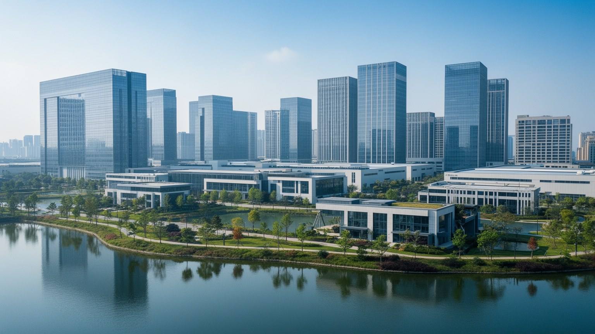
現代の蘇州を理解するには、蘇州工業園区を見なければならない。中国とシンガポールの協力で開発されたこの地区は、外資企業、電子、精密機械、バイオ医薬、ソフトウェア、金融サービス、研究機関、高層住宅を集め、古典園林の都市という印象を大きく広げた。整った道路、湖畔のオフィス、工場、展示会場、国際学校、商業施設は、蘇州が長江デルタの産業競争で重要な役割を持つことを示している。ここでは本社機能、研究開発、部品調達、検査、物流、労務管理が近接し、上海や無錫、昆山、杭州の企業とも密に結ばれる。高技能の技術者や管理職が集まる一方、ライン作業、食堂、清掃、警備、配送、寮管理の労働も不可欠である。工業園区の成功は高いGDPを生むが、長時間勤務、家賃、子どもの教育、環境管理、郊外通勤の問題も引き寄せる。蘇州は庭園都市であるだけでなく、スマートフォン、医療機器、自動車部品、半導体関連部材を世界へ送り出す生産都市でもある。静かな水路と精密な工場を同じ地図に置くことで、蘇州の現在の厚みが見えてくる。さらに園区の競争力は、大学、職業教育、外国企業との契約、知的財産管理、行政サービスに支えられる。製造の現場と政策の設計が近いことが、蘇州を単なる受託生産の都市にとどめない。国際情勢や供給網の変化が起きるたびに、園区の企業は部品調達、輸出管理、人材確保を調整し、都市経済もその緊張を受ける。
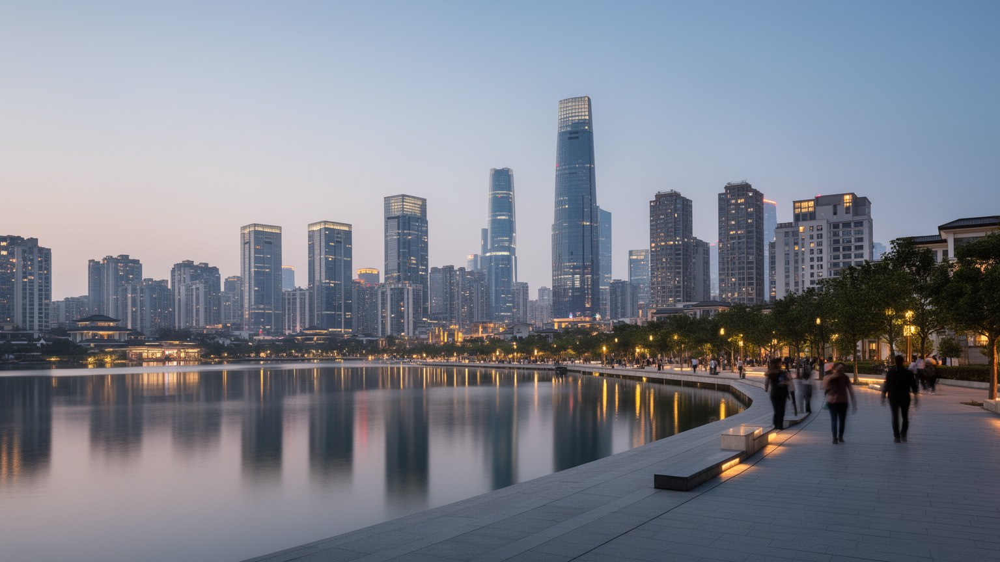
金鶏湖周辺は、蘇州の新しい都市像を見せる場所である。古城の低い屋根や細い水路とは対照的に、湖畔には高層住宅、オフィス、劇場、ショッピングモール、遊歩道、国際的なホテルが並ぶ。水辺は伝統的な運河の延長であると同時に、現代都市が自分を世界へ見せる舞台でもある。広い湖面は余暇、ジョギング、夜景、イベントを受け止め、若い専門職や家族が新しい生活を組み立てる場所になった。だが新市街の整った景観は、土地開発、住宅価格、消費の格差、古城との距離を伴う。便利な商業施設が増えるほど、古い市場や小さな店の役割は変わり、湖畔の公共空間が誰にとって使いやすいかも問われる。金鶏湖は観光客には近代的な夜景として映るが、住民には通勤、保育、学校、買い物、住宅ローン、週末の散歩という日常の地図である。蘇州の都市形成は、古いものを保存するだけでも、新しいものへ置き換えるだけでもない。古城、園区、湖畔、周辺の水郷をどう結び、生活の選択肢を広げるかが問われる。金鶏湖の水面は、蘇州が伝統都市から広域現代都市へ移る姿を静かに映している。夜景の華やかさの裏側には、管理会社、警備、清掃、舞台スタッフ、地下鉄の運行、飲食店の長い勤務がある。新しい都市の快適さも、見えにくい労働と公共投資の積み重ねで成り立つ。湖畔の公共性を保つには、買い物をしない人、子ども連れ、高齢者、遠くから来る労働者も休める空間を残すことが欠かせない。
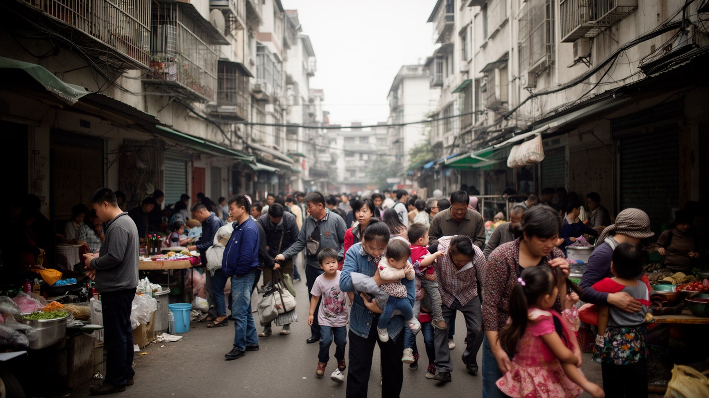
蘇州の経済は、周辺地域や内陸から来る多くの移住者に支えられている。工場のライン、検査、倉庫、建設、清掃、警備、飲食、配達、介護、ホテル、観光サービスには、安徽、河南、四川、湖北、江蘇北部などから来た人びとの仕事がある。彼らは都市の成長を動かしながら、戸籍、子どもの教育、医療、社会保障、家賃、寮生活、長時間勤務という制約に向き合う。高い産業出荷額や美しい観光景観は、こうした日常労働なしには成り立たない。工場が忙しい時期には勤務時間が延び、閑散期には収入が揺れる。サービス業では観光客の増減、天候、休日、口コミが収入に響く。蘇州の古城を歩く旅行者は、茶館や土産物店で働く人、朝に道路を清掃する人、夜に荷物を届ける人に支えられている。移住者の生活は、故郷への送金、春節の帰省、子どもの進学、親の介護と結びつき、都市と地方を毎年つなぎ直す。蘇州の包容力は、外資や研究人材を集める力だけでは測れない。生活を支える現場の人が、尊厳を持って住み、学び、医療を受けられるかが、都市の成熟を示す重要な条件である。とくに若い世代は、工場の寮から賃貸住宅へ移る時に、家賃、交通、結婚、子どもの学校を同時に考える。働く都市から住み続ける都市へ変われるかが、蘇州の社会的な課題である。路地の食堂、求人広告、送迎バスの停留所、スマートフォンの送金画面には、都市と故郷を行き来する生活の現実がよく表れる。
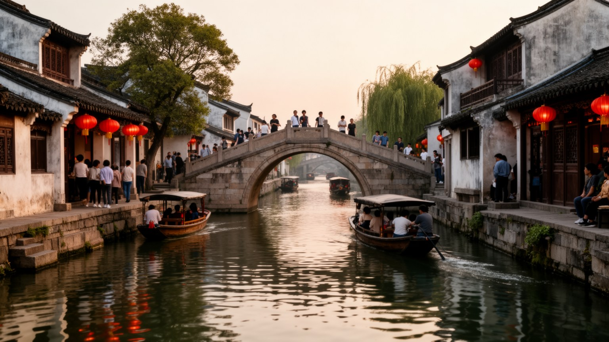
蘇州観光は古典園林だけでなく、平江路、山塘街、盤門、虎丘、博物館、そして同里や周荘など周辺の水郷へ広がる。石橋、白壁、黒瓦、小舟、茶館、古い商家の景観は、江南の理想像として国内外の旅行者を引きつける。だが水郷は初めから観光の舞台だったわけではない。水路は生活道路であり、家屋は家族の住まいであり、市場や廟、学校、作業場が日常を支えてきた。観光が成功するほど、土産物店、民宿、写真撮影、夜間照明、入場管理が増え、住民の生活時間とぶつかることがある。古い街並みを保存しても、日常の店や住民が消えれば、景観はよくできた背景に近づく。蘇州の観光を読むには、美しい水辺を楽しみながら、誰が船を操り、誰が清掃し、誰が古い家を修理し、誰が家賃の上昇で移るのかを見る必要がある。水郷の価値は、静かな写真だけでなく、朝の買い物、祭礼、雨の日の足元、古い橋の補修に宿る。観光都市としての蘇州の課題は、訪問者の期待と住民の暮らし、保存と収益、静けさとにぎわいをどう調整するかである。週末や連休には人の流れが一気に増え、交通、ゴミ、宿泊価格、騒音が水辺の小さな街区へ集中する。混雑を管理しながら生活の密度を残すことが、名所の寿命を長くする。旅の楽しさを保つためにも、観光は住民の日常と切り離さず、朝の市場や夕方の帰宅時間を尊重する形で続く必要がある。
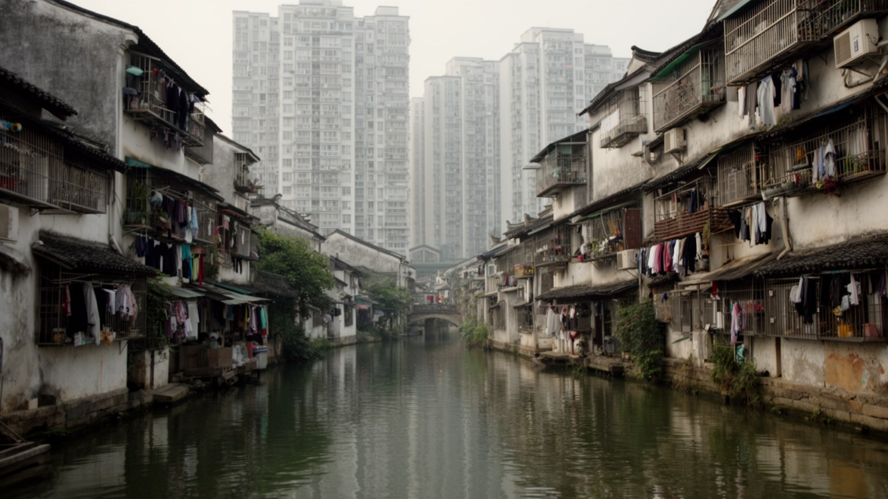
蘇州の暮らしは、古城の路地住宅、工業園区の高層マンション、郊外の団地、周辺県級市の住宅地によって大きく異なる。古城では水路、細い街路、歴史的建物、観光地への近さが魅力になる一方、老朽化、駐車、湿気、改修制限、観光客の騒音が負担になる。新しい住宅地では設備や学校が整う場合もあるが、住宅価格、管理費、通勤距離、保育、医療への近さが生活を左右する。蘇州は高所得の製造業と専門職を抱えるため、住宅市場の圧力も強い。若い労働者は寮やシェア、郊外賃貸に頼り、子どもを持つ世帯は学区、通勤、親の介護を同時に考える。高齢者にとっては、古い近所の会話、買い物、病院、階段の上り下りが日々の安心に直結する。観光地として美しく整えられた街路も、住民にはゴミ出し、配達、雨の日の移動、家族の食卓の場所である。蘇州の都市政策は、遺産保存と生活改善、新築供給と古いコミュニティの継続を一緒に扱う必要がある。庭園や運河の美しさを守ることは、そこに住む人の家計と身体の負担を軽くすることと切り離せない。朝市、団地の広場、学校前の送迎、夜の屋台は、観光地図に小さくしか出ないが、都市の実感を作る場所である。日常を読めば、蘇州の美しさは生活の工夫から生まれていると分かる。住民にとって良い都市かどうかは、名所の保存だけでなく、雨の日に買い物へ行ける道、近くの診療所、手ごろな家賃、子どもが遊べる余白で決まる。
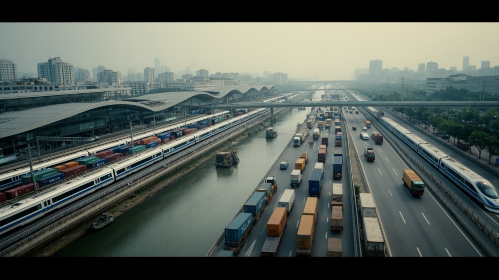
蘇州の交通は、古い水路と現代の高速交通が重なっている。上海、南京、杭州、無錫、昆山へ向かう高速鉄道や都市間鉄道、高速道路、地下鉄、バス、水上観光、周辺空港へのアクセスが、長江デルタの生活圏を細かく結ぶ。多くの人にとって、蘇州で働き、上海へ出張し、昆山や無錫の工場と取引し、休日に水郷へ行くことは一つの連続した移動である。交通の便利さは企業立地を強くし、観光客を増やすが、混雑、駐車、工事、通勤時間、駅周辺の土地価格も生む。地下鉄は古城と園区、郊外住宅地を結ぶ重要な基盤になりつつあるが、末端のバス、自転車、徒歩の環境が弱ければ生活の便利さは偏る。工場労働者の送迎バス、配達員の電動バイク、観光客の団体バス、高齢者の徒歩は、同じ道路空間で別の速度を持つ。蘇州を広域都市として読むには、名所から名所への移動だけでなく、朝の通勤、夜の物流、駅前の乗換、雨の日の橋を渡る時間を見る必要がある。水路の都市が鉄道と高速道路の都市へ変わっても、移動は都市の公平さを測る基本であり続ける。デルタの速さは、近所の歩きやすさに支えられて初めて暮らしになる。観光船の遅い時間と高速鉄道の速い時間が同じ都市にあることも、蘇州らしい特徴である。移動の質は、巨大駅の規模だけでなく、最後の一キロを歩きやすく、自転車やバスへ無理なく乗り継げるかで決まる。
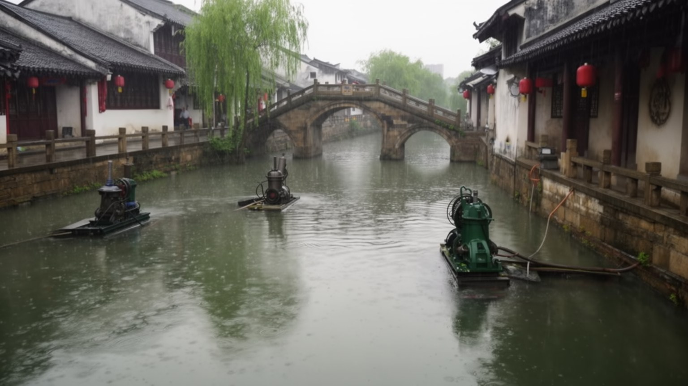
蘇州の気候は温暖湿潤で、春と秋は過ごしやすいが、梅雨、蒸し暑い夏、台風の大雨、冬の湿った冷え込みがある。水路と湖に恵まれた都市は、同時に低地の排水、河川水位、内水氾濫、地盤、湿気に注意しなければならない。古城の細い水路や低い街路、郊外の工業団地、地下施設、交通結節点は、強い雨の影響を受けやすい。気候リスクは将来の抽象的な問題ではなく、通勤、配送、観光、学校、工場の操業、高齢者の健康に関わる。夏の熱は屋外労働者、配達員、観光案内、建設現場、古い住宅の住民に負担をかける。水辺の景観を保つには、水質管理、排水路の維持、緑地、湿地、日陰、避難情報、公共施設の冷房が必要である。太湖周辺では水質や藻類、飲み水の安全も都市の信頼に関わる。蘇州の美しさは、水を近くに感じることから生まれるが、その水は管理を怠るとすぐ生活の脅威になる。古典園林の池、観光の小舟、工業園区の排水、住宅地の雨水は、同じ水循環の中にある。水郷都市の成熟は、景観を楽しむ力だけでなく、弱い住民を暑さと浸水から守る制度で測られる。雨の季節に古い橋や路地を歩くと、排水溝の管理、石畳の滑りやすさ、地下入口の段差までが安全の条件になる。気候への備えは、大きな堤防だけでなく小さな日常管理の積み重ねでもある。工場や観光施設の操業も天候に左右されるため、警報、休業判断、交通情報を分かりやすく届ける仕組みが都市全体の安全を高める。
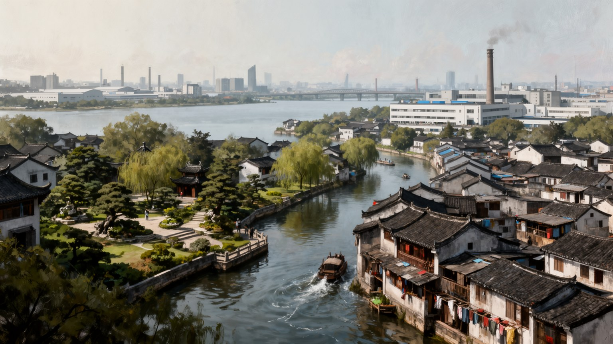
蘇州は、古典園林と水郷の美しさによって記憶されやすい。その印象は確かに都市の核を捉えているが、それだけでは大運河と太湖の地理、上海に近い産業立地、蘇州工業園区、金鶏湖の新市街、移住労働、住宅市場、交通、気候リスクを見落とす。庭園の静けさは、工場の稼働音や通勤電車の混雑と同じ都市圏にある。絹や刺繍の繊細さは、電子部品や医療機器の精密さともつながり、古い水路は現代の物流と観光の両方に影を落とす。蘇州を総合的に読むには、拙政園、平江路、山塘街、金鶏湖、工業園区、周辺の水郷、郊外の団地、太湖の水域を同じ地図に置く必要がある。観光客の視線だけでは、住民の家賃、学校選び、雨の日の通勤、移住者の寮、工場の夜勤は見えにくい。蘇州の価値は、古いものを凍結することではなく、歴史的な細部と現代産業をどう並べ、生活の質を保つかにある。橋の上から見える水面は、過去の詩情だけでなく、都市の労働、資本、気候、家族の時間を映している。そこまで重ねて見る時、蘇州は江南の名所ではなく、現代中国の変化を読む大きな窓になる。都市を読み解く鍵は、静かな庭園と忙しい工場を対立させないことだ。どちらも水、労働、技術、秩序への感覚によって成り立ち、蘇州という一つの生活圏を形づくっている。だから蘇州を見る時は、写真になる橋や庭だけでなく、駅、寮、研究棟、朝市、排水路、家族の食卓まで視野に入れる必要がある。